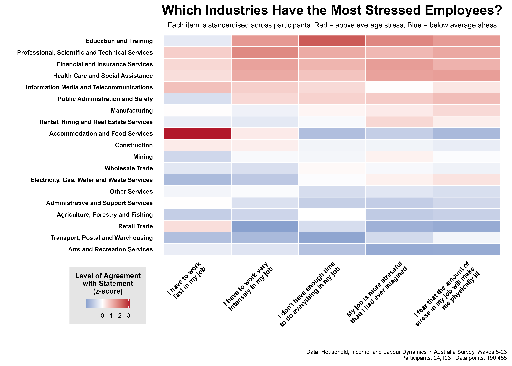

Workplace stress is a major driver of burnout, poor performance, and employee turnover. While a certain amount of stress is normal, even desirable, too much stress can place employees at risk. The risk isn't just about employee disengagement, but also about the potential for physical and psychological injury.
So which industries are carrying the heaviest burden?
Using nearly two decades of data from the HILDA survey, we analysed five different measures of work-related stress taken from over 24,000 workers across 19 industries to identify which professions are the most and least stressful.
The results (shown in the graph below) show an interesting pattern:
Top 5 Most Stressed Industries:
- Education and Training
- Professional, Scientific and Technical Services
- Financial and Insurance Services
- Health Care and Social Assistance
- Information Media and Telecommunications
Top 5 Least Stressed Industries:
- Arts and Recreation Services
- Transport, Postal and Warehousing
- Retail Trade
- Agriculture, Forestry and Fishing
- Administrative and Support Services

It's clear that stress isn't spread evenly across the economy. The industries carrying the heaviest burden are those that combine high responsibility, complex client or stakeholder demands, and heavy intellectual or emotional load. These are roles like teaching, healthcare, finance, and professional services.
By contrast, sectors with more operational or bounded roles, such as retail, transport, or recreation, tend to report lower stress, even if they face other challenges like insecurity or lower pay.